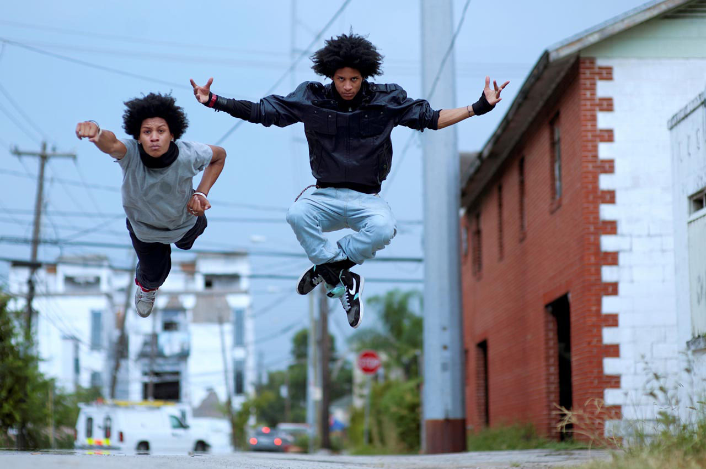

the dancing legends from paris
Go to Last page
Professionally known as Les Twins, identical twin brothers Laurent and Larry Nicolas Bourgeois (born December 6, 1988) are French dancers
choreographers, and models. Often referred to by their respective nicknames, "Lil Beast" and "Ca Blaze", they are recognized internationally for their talents in new style hip-hop dancing
Born and raised in Sarcelles, France, the self-taught dance duo became the darlings of the French audience in 2008 as finalists on the popular television show Incroyable Talent
They quickly rose to prominence in the United States after a video of their performance on the San Diego leg of the 2010 World of Dance tour went viral on YouTube, with over 37 million views as of July 05, 2017.
In 2011, they won the hip-hop new style division of the prestigious international street dance competition Juste Debout
In March 2008 Les Twins gained the attention of the dance community by defeating French street dancers Joseph Go and Meech Onomo at the semi-finals of the prestigious international dance competition Juste Debout
On November 13, 2008 the twins were among the top twelve finalists competing on the Incroyable Talent finale show attended by Princess Stéphanie of Monaco and watched by over 4 million viewers
In August 2010 a video of their performance on the World of Dance tour in San Diego went viral on YouTube.[3] On November 9, 2010 they made their U.S. television debut on The Ellen DeGeneres Show
World of Dance is a Southern California-based dance, fashion, music, and entertainment brand founded by David Gonzalez, Myron Marten, and Michael McGinn in 2008
It is the world’s largest dance entertainment enterprise, elevating artists and brands with events, entertainment and digital engagement.
The brand encompasses more platforms than any other dance content provider or dance show case
including World of Dance competitions in more than 25 countries, the NBC World of Dance .
the World of Dance Live tour, a fashion line, and the largest YouTube dance network with more than 300 channels, including the World of Dance YouTube channel
with more than 2.5 million subscribers. Its events bring together performers from the street
urban, and hip hop dance world, connecting the dance community with a particular focus on millennial and post-millenial audiences..
The first World of Dance competition was held in 2008. Since then, the brand has expanded to competitions in more than 25 countries. Each year, World of Dance Qualifier events are held around the world (40 internationally, 15 in the U.S.), bringing together street and urban dance crews to compete for two titles: